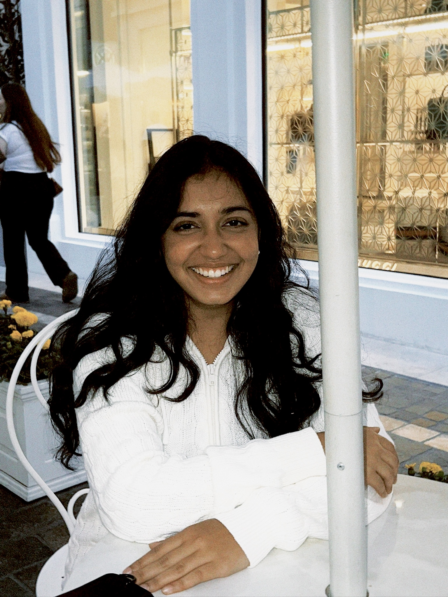

Security operations platform
Designing a responsive platform for guards, office staff, and clients, including GPS-based check-ins, incident reporting, payroll, and billing.
Computer vision · Embedded systems · 3D visualization
Computer engineering and computer science student at USC, building with cameras, sensors, and software.

I love the moment a prototype starts responding to the world around it.
At USC, I study computer engineering and computer science, focusing on embedded systems and minoring in product design. Robotics, computer vision, and machine learning let me work across the parts I enjoy most, from testing on real hardware to figuring out what the experience should feel like.
Outside engineering, I enjoy portrait art and design. I bring that same attention to light, movement, and expression to the interfaces I build.
Designing a responsive platform for guards, office staff, and clients, including GPS-based check-ins, incident reporting, payroll, and billing.
Studying GRAND and GRANDAB decoding under burst errors, including how interleaving and adaptive noise guessing affect decoding performance.
Developed a two-pass Hungarian assignment algorithm to reduce travel distance during drone formation changes while respecting device, orientation, and spatial constraints. Validated the approach on physical hardware with Vicon motion capture.
Organized 200+ components across 60 labeled bins and built a Kotlin Android app with Room and keyword search to help members find parts.
Led a six-person team and integrated a motorized scanning carriage, a vision-language pipeline, and an inventory app.
Built the pose-tracking pipeline with MediaPipe, Flask, and Unity, including the joint transformations and smoothing that drove the 3D garment visualization.
Compared three classifiers across mortgage data from eight states and evaluated precision, recall, and fairness tradeoffs.
Built a Jetson-powered prototype and programmed light-responsive sunglasses and real-time audio filtering for sensory overstimulation.
Good Vibes Only AI/ML Hackathon
Kode With Klossy × BWDC Challenge
StellarXplorers
USC Viterbi
Estée Lauder Coding Challenge